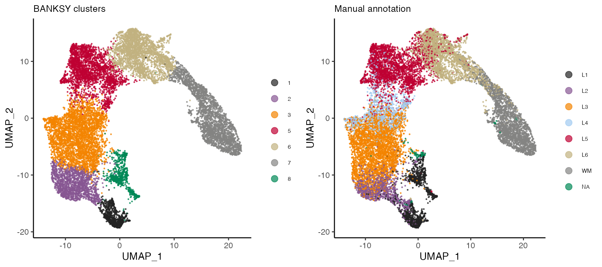
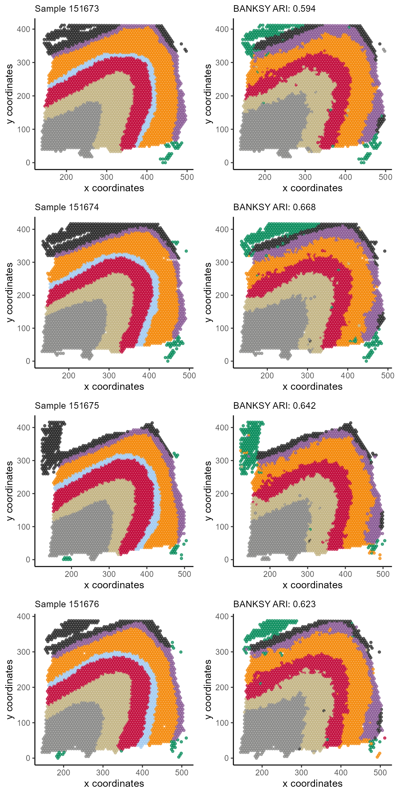

Here, we demonstrate BANKSY analysis on the human dorsolateral prefrontal cortex 10x Visium data from Maynard et al (2018). The data comprise 12 samples obtained from 3 subjects, with manual annotation of the layers in each sample. Here, we demonstrate BANKSY analysis on multiple datasets with 4 of the 12 samples in this dataset.
The package provides gene expression and spot locations for the
samples from subject 3 (sample 151673 - 151676). We processed the raw
data (obtained here)
by first performing library size normalization. Next, we identified the
top 3000 highly variable genes for each sample. The union of these genes
were used as the gene set for downstream analysis. See
?Banksy::dlpfc151673 for more details.
Here, we load the data and construct the BanksyObject.
library(Banksy)
library(gridExtra)
library(ggplot2)
data(dlpfc151673)
data(dlpfc151674)
data(dlpfc151675)
data(dlpfc151676)
dlpfc <- list(dlpfc151673, dlpfc151674, dlpfc151675, dlpfc151676)
gcm <- lapply(dlpfc, function(x) x$expression)
locs <- lapply(dlpfc, function(x) x$locations)
names(gcm) <- names(locs) <- paste0('sample_15167', 3:6)
bank <- BanksyObject(own.expr = gcm, cell.locs = locs)
bank## Object of class BanksyObject
## Number of assays: 4
## sample_151673: 3639 cells 7319 features
## sample_151674: 3673 cells 7319 features
## sample_151675: 3592 cells 7319 features
## sample_151676: 3460 cells 7319 features
## Spatial dimensions:
## sample_151673: sdimx sdimy
## sample_151674: sdimx sdimy
## sample_151675: sdimx sdimy
## sample_151676: sdimx sdimy
## Metadata names: cell_ID dataset nCount NODG
## Dimension reductions:Each processed sample contains roughly ~3,500 spots and 7,319 genes.
For brevity, the code chunks in this section are not run. The table below shows the expected run time and memory requirements for the following function calls:
| Function call | Elapsed time (sec) | Total RAM used (MiB) | Peaked RAM used (MiB) |
|---|---|---|---|
| ComputeBanksy | 8.14 | 803.3 | 2423.3 |
| ScaleBanksy | 14.42 | 0.1 | 2621.0 |
| RunPCA | 299.67 | 6.0 | 6002.2 |
| ClusterBanksy | 18.81 | 32.9 | 380.4 |
We run BANKSY by first computing the neighbor-augmented matrix. We
use k_geom=6, which corresponds to the first order
neighbors for 10x Visium data:
bank <- ComputeBanksy(bank, k_geom = 6)We use lambda=0.2, and compute 25 PCs on the scale
BANKSY matrix:
bank <- ScaleBanksy(bank)
bank <- RunBanksyPCA(bank, lambda = 0.2, npcs = 25)Finally, we perform Leiden clustering on 25 PCs:
set.seed(1000)
bank <- ClusterBanksy(bank, M=0, lambda = 0.2, pca = TRUE, npcs = 25,
k.neighbors = 40, resolution = 0.5)To assess BANKSY clustering output, we load manual annotation for each sample and add it to the BanksyObject:
library(plyr)
# Manual annotation is provided with the package
anno <- readRDS(system.file('extdata/dlpfc_annotation.rds', package = 'Banksy'))
layers <- c('L1','L2','L3','L4','L5','L6','WM','NA')
anno <- as.numeric(mapvalues(anno, from = layers, to = 1:8))
# Add manual annotation the the BanksyObject
meta.data(bank)$clust_anno <- annoHere, we visualise the UMAP for the spots from all samples combined, overlayed with BANKSY clusters and manual annotation.
grid.arrange(
plotReduction(bank, reduction = 'umap_M0_lam0.2', by = 'clust_M0_lam0.2_k40_res0.5', type = 'discrete',
main = 'BANKSY clusters', main.size = 10, pt.size = 0.25),
plotReduction(bank, reduction = 'umap_M0_lam0.2', by = 'clust_anno', type = 'discrete',
main = 'Manual annotation', main.size = 10, pt.size = 0.25) +
scale_color_manual(labels = layers, values = Banksy:::getPalette(8)),
ncol = 2
)
Next, we compare BANKSY clusters against the manual annotation by computing the adjusted Rand index for each sample and visualising the spatial plots:
sample_names <- unique(meta.data(bank)$dataset)
# Get labels for each sample separately
sample_banksy <- split(meta.data(bank)$clust_M0_lam0.2_k40_res0.5, meta.data(bank)$dataset)
sample_anno <- split(meta.data(bank)$clust_anno, meta.data(bank)$dataset)
# Compute the ARI for each sample
sample_ari <- Map(function(x,y) round(mclust::adjustedRandIndex(x,y),3),
sample_banksy, sample_anno)
# Generate plots
sample_plots <- Map(function(x,y) {
p1 <- plotSpatial(bank, dataset = x, by = 'clust_anno', type = 'discrete',
main = sprintf('Sample %s', gsub('sample_', '', x)),
main.size = 10, pt.size = 1, legend = FALSE)
p2 <- plotSpatial(bank, dataset = x, by = 'clust_M0_lam0.2_k40_res0.5', type = 'discrete',
main = sprintf('BANKSY ARI: %s', y),
main.size = 10, pt.size = 1, legend = FALSE)
list(p1, p2)
},
sample_names, sample_ari)
sample_plots <- unlist(sample_plots, recursive = FALSE)
grid.arrange(
grobs = sample_plots, nrow = 4, ncol = 2,
layout_matrix = rbind(1:2,3:4,5:6,7:8)
)
## R version 4.3.2 (2023-10-31)
## Platform: aarch64-apple-darwin20 (64-bit)
## Running under: macOS Sonoma 14.2.1
##
## Matrix products: default
## BLAS: /Library/Frameworks/R.framework/Versions/4.3-arm64/Resources/lib/libRblas.0.dylib
## LAPACK: /Library/Frameworks/R.framework/Versions/4.3-arm64/Resources/lib/libRlapack.dylib; LAPACK version 3.11.0
##
## locale:
## [1] en_US.UTF-8/en_US.UTF-8/en_US.UTF-8/C/en_US.UTF-8/en_US.UTF-8
##
## time zone: Europe/London
## tzcode source: internal
##
## attached base packages:
## [1] stats graphics grDevices utils datasets methods base
##
## other attached packages:
## [1] plyr_1.8.9 ggplot2_3.4.4 gridExtra_2.3 Banksy_0.1.5
##
## loaded via a namespace (and not attached):
## [1] bitops_1.0-7 rlang_1.1.3
## [3] magrittr_2.0.3 clue_0.3-65
## [5] GetoptLong_1.0.5 matrixStats_1.2.0
## [7] compiler_4.3.2 sccore_1.0.4
## [9] png_0.1-8 systemfonts_1.0.5
## [11] vctrs_0.6.5 maps_3.4.2
## [13] ggalluvial_0.12.5 stringr_1.5.1
## [15] pkgconfig_2.0.3 shape_1.4.6
## [17] crayon_1.5.2 fastmap_1.1.1
## [19] XVector_0.42.0 labeling_0.4.3
## [21] utf8_1.2.4 rmarkdown_2.25
## [23] ragg_1.2.7 purrr_1.0.2
## [25] xfun_0.42 zlibbioc_1.48.0
## [27] cachem_1.0.8 pals_1.8
## [29] GenomeInfoDb_1.38.6 jsonlite_1.8.8
## [31] progress_1.2.3 highr_0.10
## [33] DelayedArray_0.28.0 prettyunits_1.2.0
## [35] irlba_2.3.5.1 parallel_4.3.2
## [37] cluster_2.1.6 R6_2.5.1
## [39] bslib_0.6.1 stringi_1.8.3
## [41] RColorBrewer_1.1-3 leidenAlg_1.1.2
## [43] GenomicRanges_1.54.1 jquerylib_0.1.4
## [45] Rcpp_1.0.12 SummarizedExperiment_1.32.0
## [47] iterators_1.0.14 knitr_1.45
## [49] IRanges_2.36.0 Matrix_1.6-5
## [51] igraph_2.0.1.1 tidyselect_1.2.0
## [53] rstudioapi_0.15.0 dichromat_2.0-0.1
## [55] abind_1.4-5 yaml_2.3.8
## [57] doParallel_1.0.17 codetools_0.2-19
## [59] lattice_0.22-5 tibble_3.2.1
## [61] withr_3.0.0 Biobase_2.62.0
## [63] evaluate_0.23 desc_1.4.3
## [65] circlize_0.4.15 mclust_6.0.1
## [67] pillar_1.9.0 MatrixGenerics_1.14.0
## [69] foreach_1.5.2 stats4_4.3.2
## [71] generics_0.1.3 dbscan_1.1-12
## [73] RCurl_1.98-1.14 S4Vectors_0.40.2
## [75] hms_1.1.3 munsell_0.5.0
## [77] scales_1.3.0 glue_1.7.0
## [79] mapproj_1.2.11 tools_4.3.2
## [81] data.table_1.15.0 fs_1.6.3
## [83] grid_4.3.2 colorspace_2.1-0
## [85] GenomeInfoDbData_1.2.11 RcppHungarian_0.3
## [87] cli_3.6.2 textshaping_0.3.7
## [89] fansi_1.0.6 S4Arrays_1.2.0
## [91] ComplexHeatmap_2.18.0 dplyr_1.1.4
## [93] uwot_0.1.16 gtable_0.3.4
## [95] sass_0.4.8 digest_0.6.34
## [97] BiocGenerics_0.48.1 SparseArray_1.2.4
## [99] farver_2.1.1 rjson_0.2.21
## [101] memoise_2.0.1 htmltools_0.5.7
## [103] pkgdown_2.0.7 lifecycle_1.0.4
## [105] GlobalOptions_0.1.2